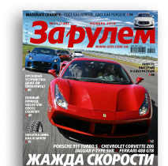
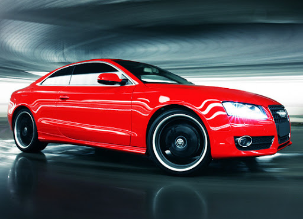
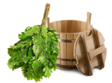
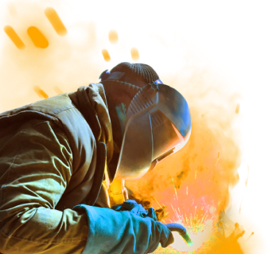
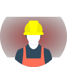
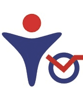
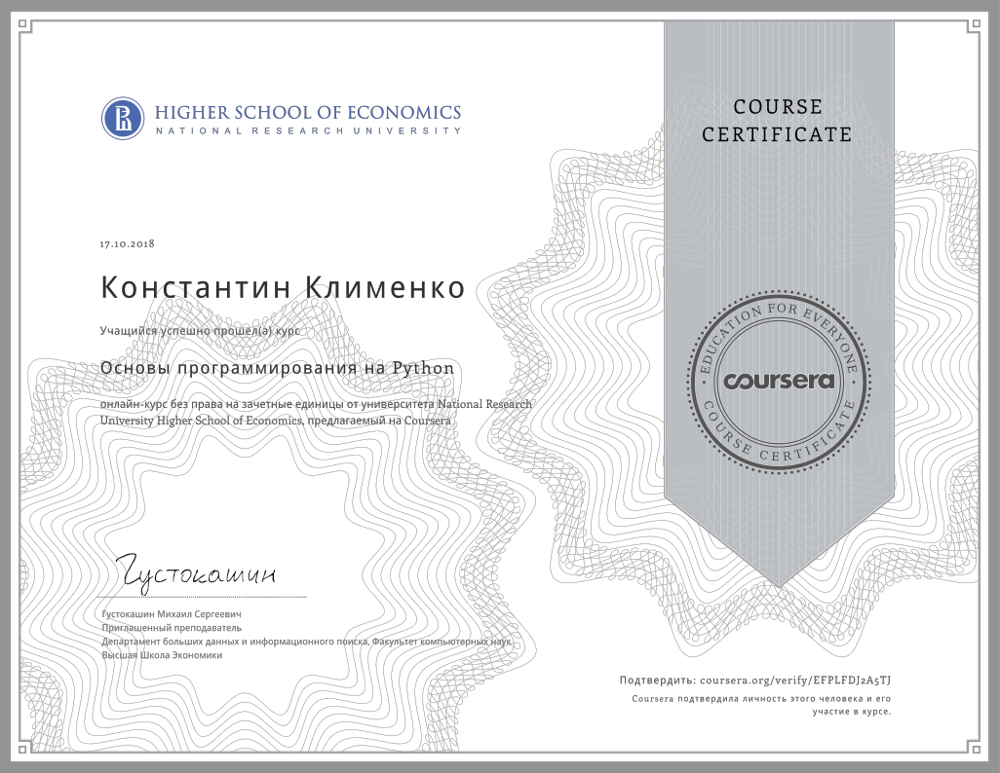
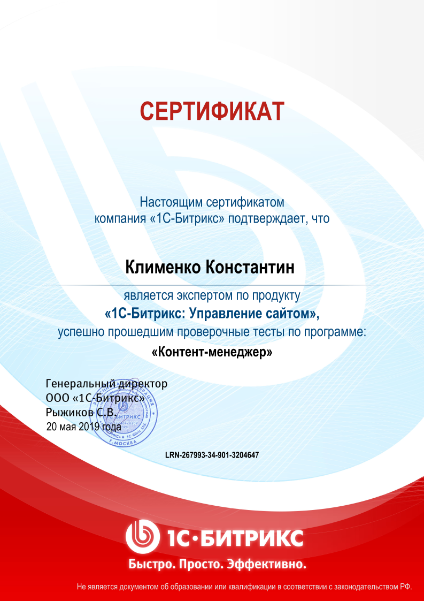

<!DOCTYPE html ><html lang="ru"> </html><head><meta charset="UTF-8"/><meta name="viewport" content="width=device-width, initial-scale=1.0"/><meta http-equiv="X-UA-Compatible" content="ie=edge"/><title>Константин Клименко|Разработчик</title><link rel="stylesheet" href="bundle.min.css"/></head><body>   <nav class="nav"><a class="nav__link m-hide" href="#skills">Навыки</a><a class="nav__link m-hide" href="#landings">Вёрстка</a><a class="nav__link m-hide" href="#bitrix_pages">Битрикс</a><a class="nav__link m-hide" href="#sert">Сертификаты</a><a class="nav__link _telephone" href="tel:+79603975547">+7(960)397-55-47</a></nav><header class="header"><aside class="header__aside">Социальные сети:<a class="header__aside__link header__aside__link--facebook" target="_blank" href="https://www.facebook.com/narcom"></a><a class="header__aside__link header__aside__link--linkedin" target="_blank" href="https://www.linkedin.com/in/%D0%BA%D0%BE%D0%BD%D1%81%D1%82%D0%B0%D0%BD%D1%82%D0%B8%D0%BD-%D0%BA%D0%BB%D0%B8%D0%BC%D0%B5%D0%BD%D0%BA%D0%BE-3880b1a9/"></a><a class="header__aside__link header__aside__link--vk" target="_blank" href="https://vk.com/narcom"></a></aside><div class="header__main"><h1 class="header__title">Web-разработчик Константин Клименко</h1><div class="header__text"></div></div></header><section class="skills" id="skills"><h3 class="title skills__title">Навыки</h3><div class="skills__content"><div class="skills__img"></div><div class="skills__diagrams diagrams"><div class="diagrams__row-title">Графический дизайн</div><div class="diagrams__rectangle-1"></div><div class="diagrams__row-title">Инструменты</div><div>Adobe PS,Corel Draw,Figma, Gimp, Pinta</div><div class="diagrams__row-title">Вёрстка</div><div class="diagrams__rectangle-2"></div><div class="diagrams__row-title">Инструменты</div><div>HTML, CSS, Bootstrap, Less</div><div class="diagrams__row-title">Front-end разработка</div><div class="diagrams__rectangle-3"></div><div class="diagrams__row-title">Инструменты</div><div>JS, Node.js, Gulp, Webpack, React</div><div class="diagrams__row-title">Back-end/ CMS</div><div class="diagrams__rectangle-4"></div><div class="diagrams__row-title">Инструменты</div><div>PHP, Bitrix, Wordpress, Joomla</div></div></div></section><section class="landings" id="landings"><h2 class="title">Примеры вёрстки</h2><div class="landings__slider" id="slider1"><div class="landings__card"><a target="_blank" href="/zr-podpiska/"></a><a class="landings__card__title" target="_blank" href="/zr-podpiska/">За рулём
</a><div class="landings__card__text"><p>Сайт журнала.<br/>Для лучшей адаптивности были использованы css-переменные. Сетка сделана с помощью CSS Grid. 
Для форм использован Material css.<br/>Препроцессор - less. Исходный код CSS разбит на модули, которые собираются с помощью Gulp.
 </p><a href="/zr-podpiska/sitemap.html">карта сайта </a><div class="white-gradient"></div></div><div class="landings__card__arrow-down" onclick="openText(this)"></div></div><div class="landings__card"><a target="_blank" href="/center_lp/"></a><a class="landings__card__title" target="_blank" href="/center_lp/">Center LP
</a><div class="landings__card__text"><p>Рекламный лендинг дизайнерского агентства.<br/>Для лучшей адаптивности были использованы css-переменные. Сетка сделана с помощью CSS Grid.<br/>Препроцессор - less. Исходный код CSS разбит на модули, которые собираются с помощью Gulp.Карусели сделаны на Slick и JQuery.</p><div class="white-gradient"></div></div><div class="landings__card__arrow-down" onclick="openText(this)"></div></div><div class="landings__card"><a target="_blank" href="http://site.hostronavt.ru/"></a><a class="landings__card__title" target="_blank" href="http://site.hostronavt.ru/">Paint resident
</a><div class="landings__card__text"><p>Рекламный лендинг автосалона. Сетка сделана с помощью CSS Grid.<br/>Макет вёрстки превращён в шаблон Wordpress<br/></p>Использован дизайн со статичными блоками информации, реализованный с помощью position: sticky.<div class="white-gradient"></div></div><div class="landings__card__arrow-down" onclick="openText(this)"></div></div><div class="landings__card"><a target="_blank" href="/sauna/"></a><a class="landings__card__title" target="_blank" href="/sauna/">Сауна "Оазис"
</a><div class="landings__card__text"><p>Главная страница сайта сауны.<br/>Сетка сделана с помощью CSS Grid.<br/>Препроцессор - less. Карусели сделаны на Slick и JQuery.<br/><br/><br/></p><div class="white-gradient"></div></div><div class="landings__card__arrow-down" onclick="openText(this)"></div></div><div class="landings__card"><a target="_blank" href="/aramzo/"></a><a class="landings__card__title" target="_blank" href="/aramzo/">Арамзо
</a><div class="landings__card__text"><p>Главная страница сайта парфюмерной компании.<br/>Сетка сделана с помощью CSS Grid.<br/>Карусели сделаны на Owl carusel и собственных скриптах.<br/><br/><br/></p><div class="white-gradient"></div></div><div class="landings__card__arrow-down" onclick="openText(this)"></div></div><div class="landings__card"><a target="_blank" href="https://potolki-nur.ru/matovye-natyazhnye-potolki-kupit/"></a><a class="landings__card__title" target="_blank" href="https://potolki-nur.ru/matovye-natyazhnye-potolki-kupit/">Потолки "Натяжнов"
</a><div class="landings__card__text"><p>Одна из страниц сайта.<br/>Сетка сделана с помощью Flexbox.<br/>Частично использованы готовые CSS от другого разработчика.<br/><br/><br/></p><div class="white-gradient"></div></div><div class="landings__card__arrow-down" onclick="openText(this)"></div></div><div class="landings__card"><a target="_blank" href="/portfolio/"></a><a class="landings__card__title" target="_blank" href="/portfolio/">Портфолио
</a><div class="landings__card__text"><p>Небольшой тренировочный лендинг<br/>Сетка сделана с помощью CSS Grid.<br/><br/><br/><br/></p><div class="white-gradient"></div></div><div class="landings__card__arrow-down" onclick="openText(this)"></div></div></div></section><section class="landings" id="bitrix_pages"><h2 class="title">Примеры работ с 1С Bitrix</h2><div class="landings__slider" id="slider2"><div class="landings__card"><a target="_blank" href="https://xn----8sbdihbrep7azagdepew7k3b.xn--p1ai/"></a><a class="landings__card__title" target="_blank" href="https://xn----8sbdihbrep7azagdepew7k3b.xn--p1ai/">Юристы Екатеринбург
</a><div class="landings__card__text"><p>Сайт юридического агентства.<br/>Несколько лендингов объединены в рамках многостраничного сайта.<br/>Информация выводится с помощью компонента News.<br/>Для вёрстки использован bootstrap.</p><div class="white-gradient"></div></div><div class="landings__card__arrow-down" onclick="openText(this)"></div></div><div class="landings__card"><a target="_blank" href="https://xn----8sbwaiauhtjlneoz.xn--p1ai/"></a><a class="landings__card__title" target="_blank" href="https://xn----8sbwaiauhtjlneoz.xn--p1ai/">Стройтехснаб
</a><div class="landings__card__text"><p>Сайт торгово-промышленной компании<br/>Макет вёрстки превращён в шаблон Битрикс<br/><br/><br/><br/><br/></p><div class="white-gradient"></div></div><div class="landings__card__arrow-down" onclick="openText(this)"></div></div><div class="landings__card"><a target="_blank" href="http://new.ovksistema.ru/"></a><a class="landings__card__title" target="_blank" href="http://new.ovksistema.ru/">ОВК Система
</a><div class="landings__card__text"><p>Интернет-магазин вентилляционного оборудования<br/>Макет вёрстки превращён в шаблон Битрикс<br/>Использованы компоненты - Каталог, Новости и Галлерея<br/><br/><br/></p><div class="white-gradient"></div></div><div class="landings__card__arrow-down" onclick="openText(this)"></div></div><div class="landings__card"><a target="_blank" href="https://stroyholding.ru/"></a><a class="landings__card__title" target="_blank" href="https://stroyholding.ru/">Стройхолдинг
</a><div class="landings__card__text"><p>Интернет-магазин строительных материалов<br/>Добавлен нестандартный функционал<br/>Кастомизированы компоненты - Каталог, Навигационная цепочка, меню и др.<br/><br/><br/></p><div class="white-gradient"></div></div><div class="landings__card__arrow-down" onclick="openText(this)"></div></div><div class="landings__card"><a target="_blank" href="https://xn--80abnusfhr4c.xn--p1ai/"></a><a class="landings__card__title" target="_blank" href="https://xn--80abnusfhr4c.xn--p1ai/">Башпротек
</a><div class="landings__card__text"><p>Инженерный центр<br/>Добавлена мультирегиональность<br/>Настроены метрики Яндекса и Гугла.<br/><br/><br/></p><div class="white-gradient"></div></div><div class="landings__card__arrow-down" onclick="openText(this)"></div></div></div></section><section class="sert" id="sert"><h2 class="sert__title title">Мои сертификаты </h2><h2/><div class="glide"><div class="glide__track" data-glide-el="track"><div class="glide__slides gallery"><a class="sert__a" href="img/bx1.png" target="_blank"></a><a class="sert__a" href="img/python.png" target="_blank"></a><a class="sert__a" href="img/bx2.png" target="_blank"> </a><a class="sert__a" href="img/bx3.jpg" target="_blank"> </a></div></div><div class="glide__arrows" data-glide-el="controls"><div class="glide__arrow glide__arrow--left" data-glide-dir="&lt;"><</div><div class="glide__arrow glide__arrow--right" data-glide-dir="&gt;">></div></div></div></section><footer class="footer"><div class="footer__title title">Контакты</div><div class="footer__content"><a class="footer__link" target="_blank" href="http://github.com/narcomacer">Github</a><a class="footer__link" target="_blank" href="http://vk.com/narcom">Vk</a><a class="footer__link" target="_blank" href="https://linkedin.com/in/%D0%BA%D0%BE%D0%BD%D1%81%D1%82%D0%B0%D0%BD%D1%82%D0%B8%D0%BD-%D0%BA%D0%BB%D0%B8%D0%BC%D0%B5%D0%BD%D0%BA%D0%BE-3880b1a9/">LinkedIn</a><a class="footer__link" target="_blank" href="https://www.facebook.com/narcom">Facebook</a><a class="footer__link" href="mailto:narcomacer@gmail.com">Gmail</a><a class="footer__link" href="tel:+79603975547">+79603975547</a></div></footer><script>function openText(e) {
    e.classList.toggle('landings__card__arrow-up');
    e.parentNode.querySelector('.landings__card__text').classList.toggle('landings__card__text--full');
}// Scroll page to id
const pageRoll = (e) => {
    e.preventDefault();
    const href = e.target.getAttribute('href');

    document.querySelector(href).scrollIntoView(top);

}
const links = document.querySelectorAll('.nav__link:not(.nav__telephone)');


for (let i of links) {

    i.addEventListener('click', pageRoll);

}</script><script src="src/parts/scripts/glide.min.js"> </script><script>var glide1 = new Glide('.glide', {
    type: 'carousel',
    startAt: 0,
    perView: 3,
    breakpoints: {
        1024: {
            perView: 2
        },
        600: {
            perView: 1
        }
    }
});


if (window.matchMedia("(max-width: 1200px)").matches) {
    var glide2 = new Glide('.glide2', {
        type: 'carousel',
        startAt: 0,
        perView: 1,

    });

    glide2.mount();
}


glide1.mount();</script></body>